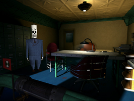
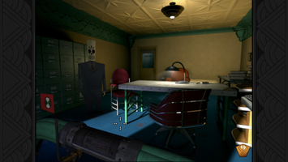

Grim Fandango
Dieser Artikel wurde für die folgenden Ubuntu-Versionen getestet:
Ubuntu 14.04 Trusty Tahr
Zum Verständnis dieses Artikels sind folgende Seiten hilfreich:
Grim Fandango ist ein Klassiker aus dem Hause LucasArts  . Manny Calavera ist Reiseberater der Toten und versucht den soeben Verstorbenen Luxusreisen anzudrehen, damit diese zu ihrer letzten Ruhestätte gelangen können. Jedoch läuft sein Geschäft nicht gut und seine letzten Klienten waren allesamt Versager. Somit streben die Beförderungschancen Mannys gegen Null und er muss um seinen Job als Diplomsenser fürchten. Er kommt im Laufe des Spiels einer Verschwörung auf die Schliche und begegnet der Liebe seines Lebens...
. Manny Calavera ist Reiseberater der Toten und versucht den soeben Verstorbenen Luxusreisen anzudrehen, damit diese zu ihrer letzten Ruhestätte gelangen können. Jedoch läuft sein Geschäft nicht gut und seine letzten Klienten waren allesamt Versager. Somit streben die Beförderungschancen Mannys gegen Null und er muss um seinen Job als Diplomsenser fürchten. Er kommt im Laufe des Spiels einer Verschwörung auf die Schliche und begegnet der Liebe seines Lebens...
Das Remake von Double Fine Productions bietet eine überarbeitete Optik und eine bessere Spielsteuerung als das Original. Innerhalb des Spiels ist es möglich, zwischen der klassischen Version und dem Remake zu wechseln.
|  |  |
| Spielszene (Original) | Spielszene (Remake) |
Installation¶
Original-Version¶
Die Original-Version des Spiels kann via ResidualVM auf dem PC genutzt werden. Benötigt werden die Dateien *.LAB, welche sich in dem Unterordner GRIMDATA auf den Datenträgern finden lassen. Diese sind in ein zu erstellendes Spielverzeichnis, z.B. ~/Spiele/Grim, kopieren. Anschließend den Patch gfupd101.exe ebenfalls in diesem Verzeichnis speichern. Der Patch ist - je nach Version - auf CD zu finden oder kann direkt von der Projektseite  heruntergeladen werden.
heruntergeladen werden.
Anschließend kann das Spiel über ResidualVM verwendet [1] werden.
Remake¶
Gog.com¶
Grim Fandango Remastered kann über die Vertriebsplattform erworben werden. Im nächsten Schritt das Spiel in der Linux-Version aus der Bibliothek herunterladen. Anschließend das Archiv gog_grim_fandango_remastered_1.0.0.3.tar.gz entpackt [2], z.B. nach ~/Spiele im Homeverzeichnis.
Zusätzlich werden die folgenden Pakete benötigt [3]:
libc6:i386
libasound2:i386
libasound2-data:i386
libasound2-plugins:i386
 mit apturl
mit apturl
Paketliste zum Kopieren:
sudo apt-get install libc6:i386 libasound2:i386 libasound2-data:i386 libasound2-plugins:i386
sudo aptitude install libc6:i386 libasound2:i386 libasound2-data:i386 libasound2-plugins:i386
Das Spiel ist im Ordner Grim Fandango Remastered zu finden und kann über start.sh gestartet werden [4]. Auf Wunsch einen Menüeintrag [5] vornehmen.
Hinweis:
Es wird der proprietäre Grafiktreiber von AMD (ATI) benötigt.
Humble Store¶
Nach dem Erwerb des Spiels aus dem Humble Store kann das Spiel von der persönlichen Seite heruntergeladen und wie die Version von Gog.com installiert werden. Beim Erwerb über diesen Vertriebsweg erhält man zusätzlich einen Key für Steam.
Steam¶
Nachdem man den Spieltitel im Steam Shop oder den Client erworben hat, kann es anschließend über letzteren installiert [6] werden.
Handbuch¶
Auf den Datenträgern der Original-Version liegt das Handbuch als PDF-Datei vor. Das Grim Fandango Network bietet eine englischsprachige Version zum Download an.
Probleme & Lösungen¶
Spiel startet nicht¶
Sofern das Spiel nicht starten sollte überprüfen ob der Patch im Installationsverzeichnis vorhanden ist.
Hinweis:
Sollten die Dateien Data005.lab oder Patch05.bin im Verzeichnis vorhanden sein erstere nach Data005.lab.bak umbenennen.
I/O-Fehler¶
Sollte es beim Kopiervorgang der Spieledaten zu o.g. Fehlermeldung kommen muss bei einigen Versionen TestDisk verwendet werden. Hier ist das Copyright des jeweiligen Landes zu beachten. Die so erstellten Images werden in das System eingebunden und die benötigten Dateien in das Spieleverzeichnis übertragen.
Tastenkürzel¶
| Tastenkürzel Original-Version | |
| Taste(n) | Beschreibung |
 | Steuerung |
| ⇧ + ↑ | Laufen |
| I / D | Inventar aufrufen bzw. verlassen. |
| U / S | Gegenstand untersuchen |
| N / A | Gegenstand nehmen/weglegen |
| ⏎ / B / W | Benutzen/Reden oder Gegenstand aus dem Inventar verwenden. |
| 1 - 0 | Gegenstände aus dem Inventar direkt aufrufen, z.B. die Sense |
| + / - | Nächsten/Vorherigen Gegenstand anschauen. |
| Esc | Dialoge überspringen |
| Pause | |

Infobox¶
| Grim Fandango | |
| Genre: | Adventure |
| Sprache: |     |
| Veröffentlichung: | 1998 / 2015 |
| Publisher: | LucasArts / Double Fine Productions |
| Systemvoraussetzungen (Original): | Pentium 133; 32 MB RAM; 40 MB Festplatte (2GB bei der Verwendung in ResidualVM); 2 MB Grafikkarte; Soundblaster; 4x CD-ROM |
| Systemvoraussetzungen (Remake): | Intel® Core™ 2 Duo 2.4 GHz+ oder AMD Athlon™ X2 2.8 GHz+, 4 GiB RAM, Grafikkarten: ATI Radeon HD 4650, NVIDIA GeForce GT 220 oder Intel HD 4000, 6 GB Festplattenspeicher |
| Medien: | CD (2) / Download |
| Strichcode / EAN / GTIN: | 4012160461009 / 0023272003944 / 0023272003944 |
| Läuft mit: | nativ |
Links¶
Grim Fandango - Fanseite
- Lösungshilfe, Downloads und Hintergrundinformationen.Grim Fandango - The Department Of Death
- Demo, Artwork und vieles mehr.Original Soundtrack
(mp3)Grim Fandango - Fansite
- Demo
- Erstellt mit Inyoka
-
 2004 – 2017 ubuntuusers.de • Einige Rechte vorbehalten
2004 – 2017 ubuntuusers.de • Einige Rechte vorbehalten
Lizenz • Kontakt • Datenschutz • Impressum • Serverstatus -
Serverhousing gespendet von